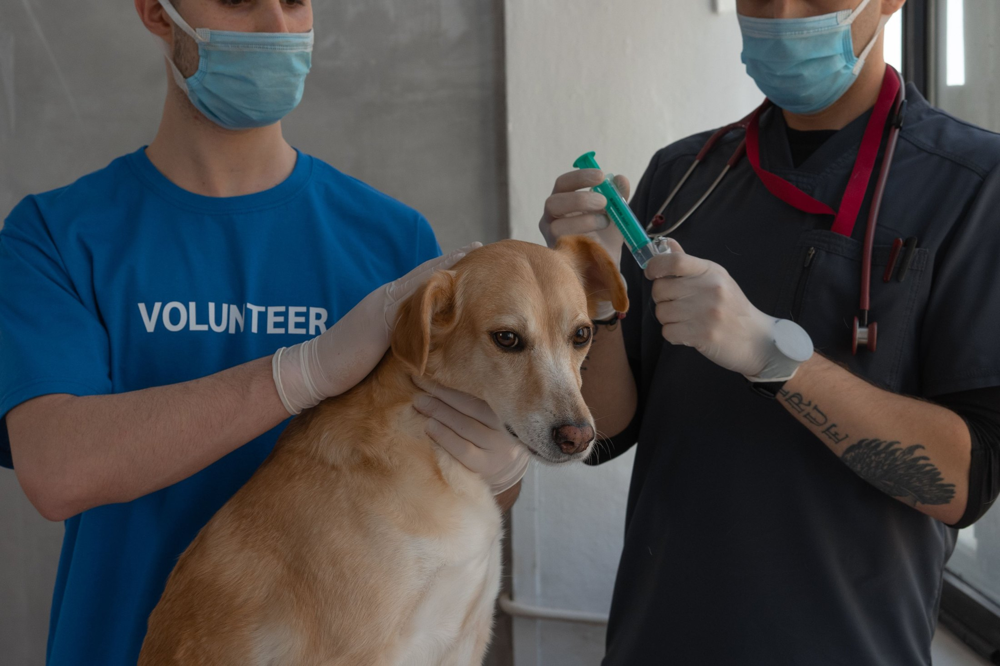
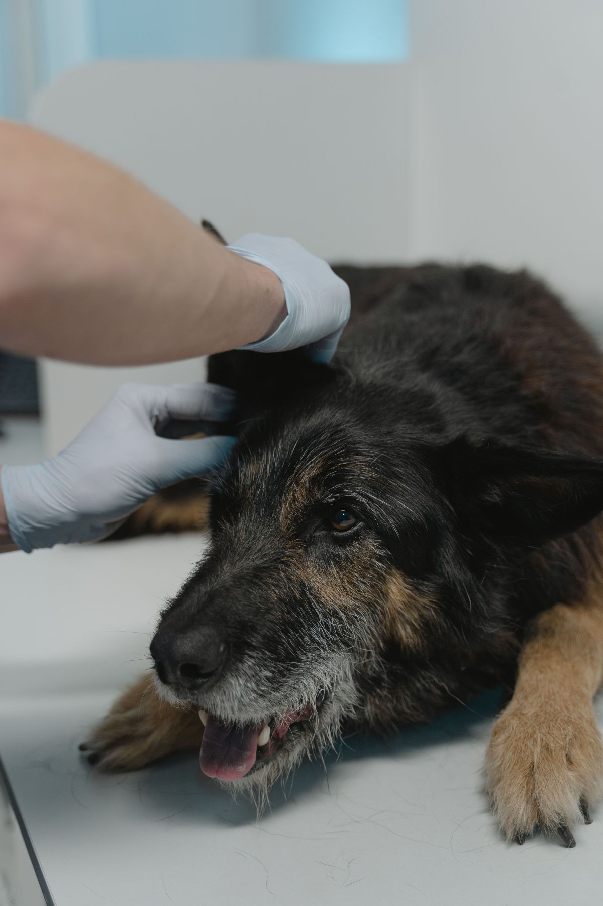
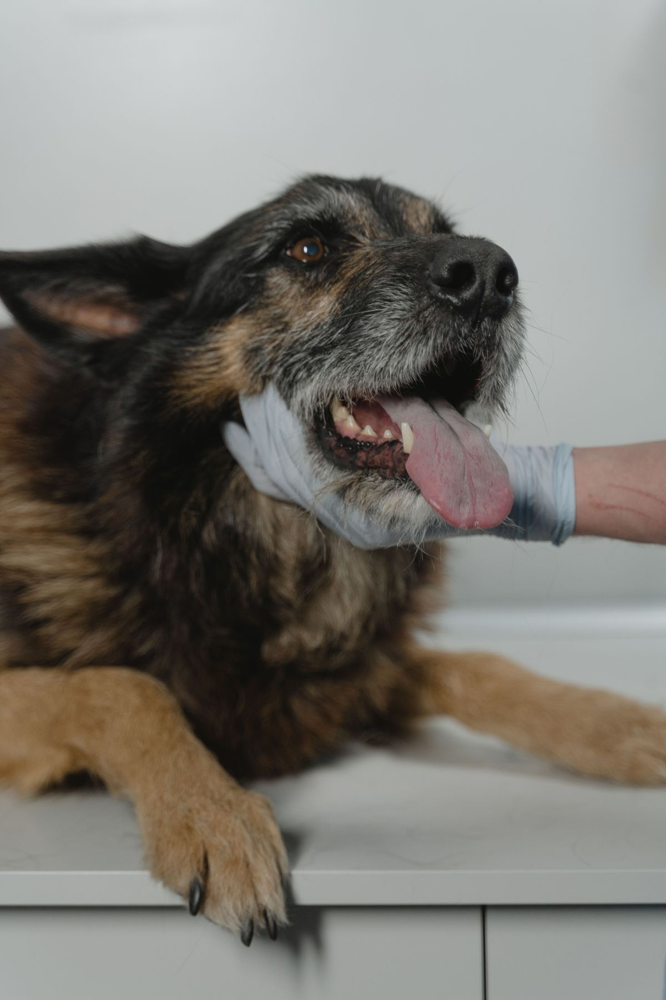
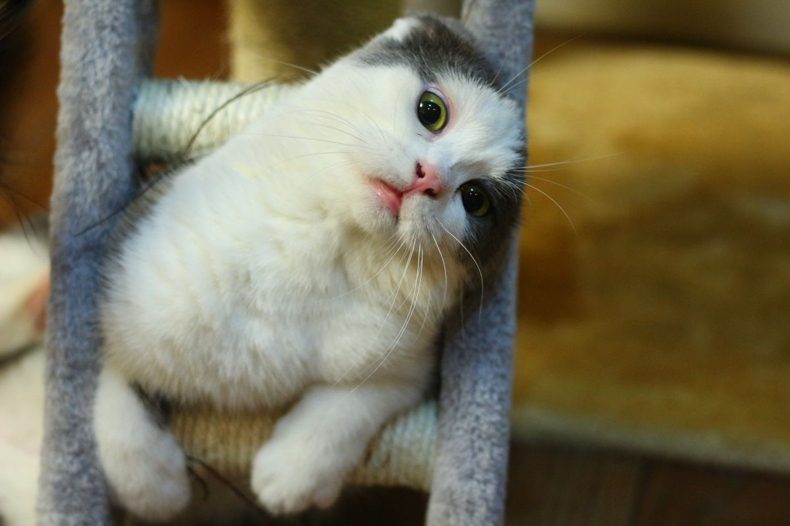
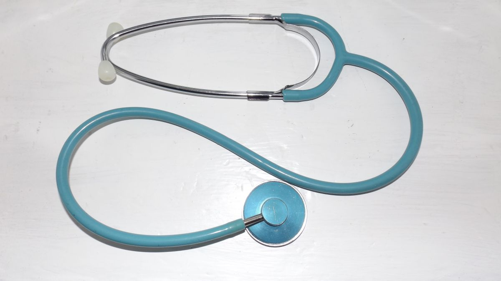
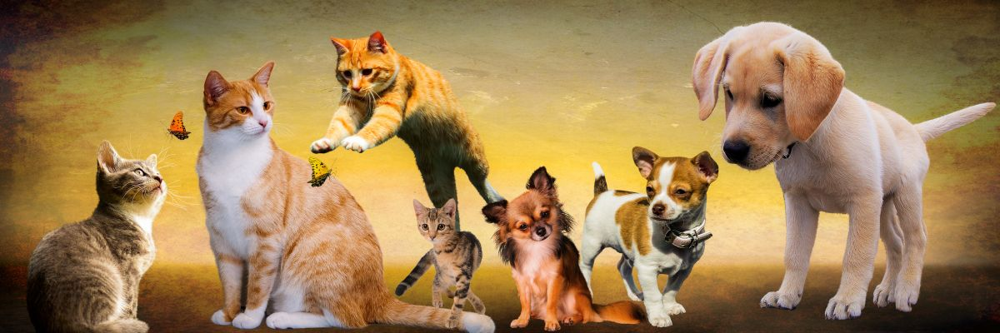
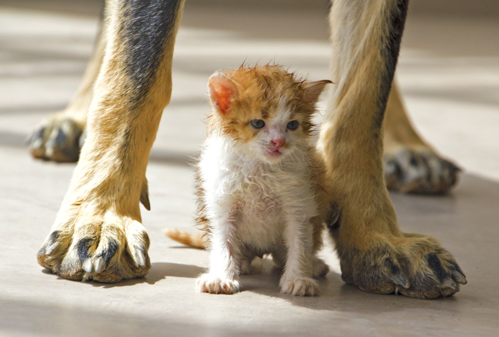

Baquedano 11, esquina Decher · Puerto Varas
Haustiere — mascotas, en alemán.
Un centro veterinario en la esquina de Baquedano con Decher. Acá está explicado, término por término, lo que se dice en una consulta y que casi nadie alcanza a preguntar.
La pieza que sólo Haustiere puede tener
El diccionario de la consulta.
Ocho palabras que se dicen en cada consulta y que el dueño asiente sin entender del todo. Acá están en alemán —porque el nombre lo pide— y explicadas en castellano, con lo único que importa: cuándo hay que preocuparse.
-
Der Hund
el perro
La consulta parte igual para todos: temperatura, mucosas, hidratación y peso. El peso no es un dato de vanidad — de él salen todas las dosis.
-
Die Katze
el gato
Esconde el dolor mejor que cualquier animal. Un gato que se esconde, deja de comer o deja de usar la arena está diciendo algo, aunque camine normal.
-
Die Impfung
la vacuna
No es una sola: es un calendario que depende de la edad, de si sale a la calle y de con quién vive. El carné vale más que la memoria.
-
Die Kastration
la esterilización
Cirugía programada, con ayuno previo y control después. La conversación importante es la de antes: qué cambia y qué no cambia en el animal.
-
Das Fieber
la fiebre
La nariz seca no mide nada. La temperatura se toma con termómetro, y un animal decaído con fiebre es motivo de consulta el mismo día.
-
Die Zähne
los dientes
El sarro no es estético: es una infección crónica en la boca. El aliento muy fuerte suele ser el primer aviso, y llega antes que cualquier dolor visible.
-
Die Haut
la piel
Rascarse todo el año no es normal. Dónde se rasca y en qué época importa tanto como cuánto: cambia por completo la causa probable.
-
Der Notfall
la urgencia
Respiración difícil, no poder orinar, convulsión o un golpe fuerte. En esos cuatro no se espera a mañana: se sale de la casa.
Esto es vocabulario, no diagnóstico. Todo lo de acá se decide con el animal adelante y por un médico veterinario.

La consulta empieza antes de la camilla.
Cómo llegó, qué come, con quién vive y desde cuándo está así. Esas cuatro respuestas ahorran la mitad de los exámenes.
Servicios
Qué se hace acá.
Esta lista es ejemplo hasta que el centro la confirme. Se arma en una conversación y es lo primero que busca un cliente nuevo.
Consulta clínica
Evaluación completa y plan de qué sigue, por escrito.
Vacunas
Calendario según edad, salidas y convivencia.
Cirugía
Programada, con ayuno indicado y control posterior.
Exámenes
Los que se toman acá y los que se derivan, dicho antes.
Odontología
Limpieza y evaluación de la boca bajo anestesia.
Control de peso
Seguimiento con números, no con impresiones.
Cuándo traerlo
Señales que ameritan consulta.
- Deja de comer más de un día
- Toma mucha más agua que antes
- Baja de peso sin cambio de dieta
- Cojera que no mejora en el día
- Vómitos o diarrea que se repiten
- Aliento muy fuerte de un tiempo a esta parte
- Se rasca todo el año
- Cambia el ánimo o deja de subir donde subía
Ninguna de estas señales es un diagnóstico: son motivos para pedir hora. Qué tiene el animal lo determina el veterinario.
«Haustiere: los animales de la casa. El nombre ya dice de qué se trata — falta que Google lo sepa.»
Quiénes pasan por acá
Die Haustiere.






Dónde estamos
Baquedano 11, esquina Decher.
Una esquina es más fácil de explicar que un número. Por eso está escrita así y no sólo con la dirección.
- Dirección
- Baquedano 11, esquina Decher, Puerto Varas
- Dónde están hoy
- Instagram @somos_haustiere
- Teléfono
- No aparece publicado
- Horario
- Lunes a sábado, con hora reservada
Acá va la foto de la esquina de Baquedano con Decher. Es la que hace que alguien reconozca el lugar al pasar — y ninguna foto de banco la reemplaza.
Contar el caso antes de llegar
Sin JavaScript los campos siguen sirviendo de guía de qué contar. Lo único que se pierde es que el texto se arme solo.
Para el dueño
Qué es esto y qué falta.
Qué es
Una propuesta de sitio web hecha por nuestra cuenta. Haustiere no la encargó ni la ha revisado. Dimos por cierto sólo lo que ustedes publican: la dirección de Baquedano 11 esquina Decher y el Instagram.
Qué es ejemplo
La lista de servicios, el horario y el teléfono, que no está publicado. El diccionario es vocabulario y criterio general del oficio —sin dosis ni medicamentos— y la página lo dice dos veces.
Qué cambiaría la página entera
El teléfono, los horarios y una foto de la esquina. Y el diccionario ampliado con los términos que ustedes usan a diario: esa lista es intransferible y ninguna otra veterinaria puede copiarla.